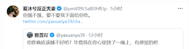
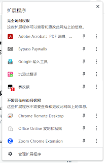
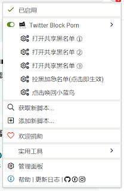
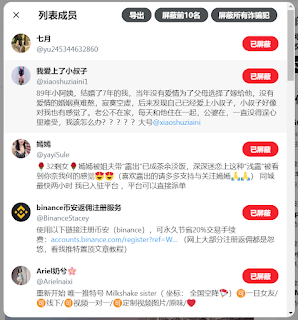

插件推荐：屏蔽黄推 - Plugin Recommendation：Twitter Block Porn
从去年（2022年）或今年年初开始，推特（现在叫做X）上多出了上百个黄推账号（色情推主）。这些黄推账号用着不知道哪里偷来的图片，三五成群，出现在各大中文推主的评论区里，说着土味十足且重复率极高的垃圾情话，十分干扰用户正常体验。
Since last year (2022), or the beginning of this year, hundreds of porn-related accounts have sprung up on Twitter (Now called X). These accounts, appearing in the comment sections of many Chinese posts, use illicitly obtained images and repeatedly post crass, flirtatious remarks, greatly disrupting the normal user experience.

这里推荐一个插件，能够屏蔽这些恶心的sb。
To remedy this, here is a plugin recommendation capable of blocking these vexing accounts.
首先，需要安装一个浏览器扩展程序：篡改猴。其支持chrome，firefox，edge等常见的浏览器。这里以chrome为例。点此安装篡改猴：
Firstly, you'll need to install a browser extension named "Tampermonkey". It is compatible with popular browsers like Chrome, Firefox, and Edge. For this example, we will use Chrome. Click here to install Tampermonkey:
点击此处，在篡改猴里安装这款插件。
Following that, click here to install the plugin in Tampermonkey.
之后，打开chrome的扩展程序，选择篡改猴，可以看到几个共享黑名单，即黄推名单。点开，然后点击右上角的“屏蔽所有诈骗犯”。如果找不到“屏蔽所有诈骗犯”按钮，就刷新一下。
After doing so, navigate to Chrome's Extensions, select Tampermonkey, where you will see several lists like 打开共享黑名单 (open shared blacklists). Click to open and then select "屏蔽所有诈骗犯" (Block all scammers) on the top right corner. If this option is not immediately available, try refreshing the page.
  
如果找不到黄推名单入口，也可以手动打开其网页，然后一键屏蔽。截止目前（2023/9/12），有3个名单。
If you can't find the entrance for the porn-account list, you can also manually open the page, and block them with a single click. As of now (September 12, 2023), there are three lists.
https://twitter.com/i/lists/1677334530754248706/members
https://twitter.com/i/lists/1683810394287079426/members
https://twitter.com/i/lists/1699049983159259593/members
2024/06/06更新： - Update on June 6, 2024:
现在黄推名单已经增加到了8个。但是这些名单里的账号只是一小部分，在很多中文推特推主的评论区里还有非常多的黄推账号。目前我基本上是见一个举报一个，也希望大家可以稍稍花点时间举报这些账号。
The list of porn accounts has now increased to eight. However, these accounts are just a small portion; there are many more porn accounts in the comment sections of many Chinese Twitter users. I am currently reporting each one I come across, and I hope everyone can also take a bit of time to report these accounts.